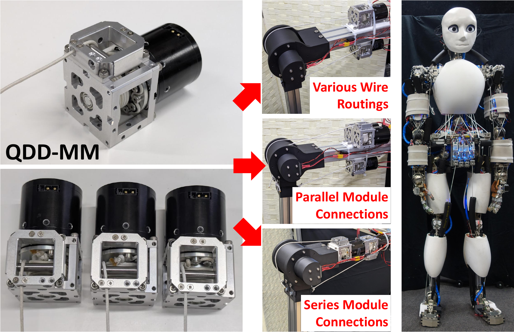
Abstract
Tendon-driven robots, which actuate like biological muscles by using motors to wind wires, offer advantages such as variable stiffness and redundant actuation. Despite these advantages, musculoskeletal structures inherently involve a large number of diverse muscles, making it desirable to compactly modularize each muscle unit and flexibly accommodate diverse muscle arrangements. While various small muscle modules have been proposed to date, existing designs tend to be complex, difficult to maintain, and suffer from low backdrivability and limited actuation speed due to their high gear ratios. In this work, we propose QDD-MM, a muscle module that leverages recent advances in quasi-direct-drive motors to achieve a simpler and more compact structure with higher backdrivability and faster actuation than previous modules. By utilizing quasi-direct-drive motors, the module eliminates the need for dedicated force-sensing mechanisms, significantly simplifying the overall design, while also supporting flexible wire routing in multiple directions, various module-to-module connections, and even the use of the module body itself as a structural component. QDD-MM integrates these capabilities into a reusable muscle module, and its design is openly available at github.com/haraduka/qddmm. We developed tendon-driven robots with one joint and either two or three muscles, as well as a partial musculoskeletal humanoid, using the proposed QDD-MM and verified their effectiveness. We expect that this muscle module will democratize tendon-driven robotics and further accelerate progress in the field.
Video
QDD-MM: Design and Experiments
Design Overview
QDD-MM consists of a main body integrating a RobStride05 quasi-direct-drive motor and a wire-winding pulley, together with a detachable wire routing unit. The motor driver is built in and controlled over CAN. Four machined metal parts and one sheet-metal part form the module.
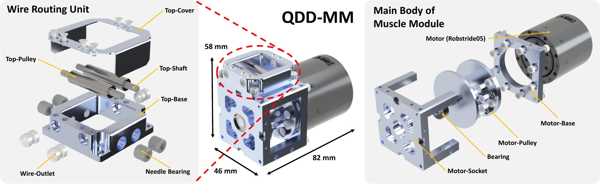
| Dimensions | 46 × 58 × 82 mm |
|---|---|
| Module mass | 0.34 kg |
| Gear ratio | 7.75:1 |
| Continuous maximum tension | 133 N |
| No-load winding speed | 603 mm/s |
| Tendon | 2 mm-diameter Zylon wire |
Tension and speed depend on the actuator and pulley radius. A 12 mm pulley provides 267 N continuous maximum tension and 302 mm/s no-load winding speed.
Components and Wire Attachment
Download the full assembly STEP, individual component models, and parts list from Google Drive.
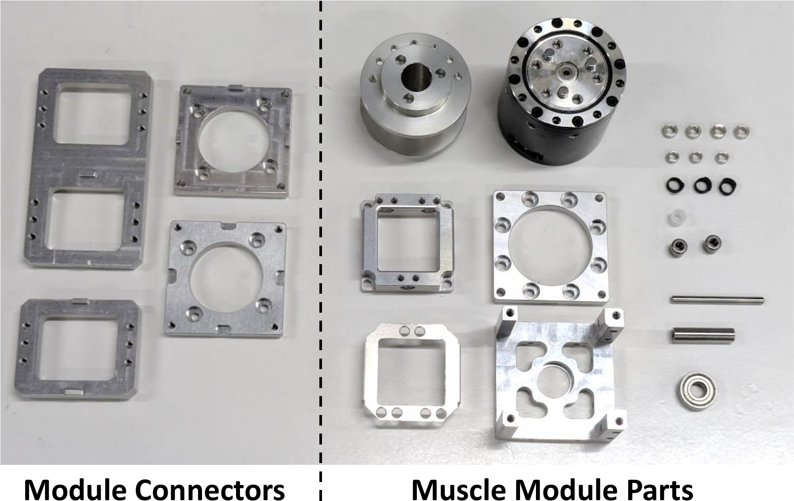
The wire passes alternately around seven small pulleys, distributing the load through friction. This arrangement increases the minimum bending radius to 3 mm and reduces the load on the end knot. Machined parts use A7075 aluminum alloy; sheet-metal parts use A5052.
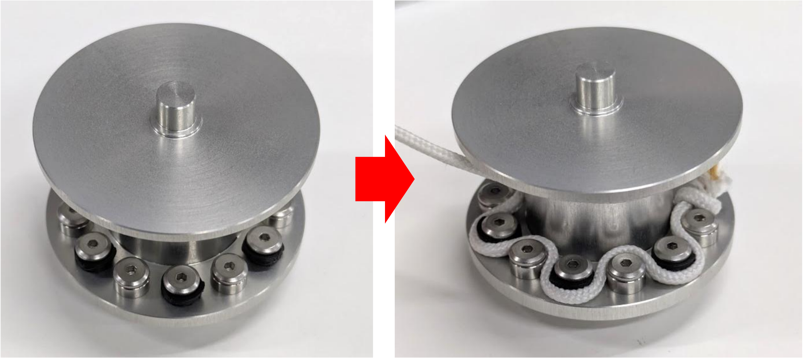
Flexible Wire Routing
The wire routing unit can be mounted on either side of the main body in four orientations. A single top pulley allows forward, backward, leftward, or rightward extraction; two top pulleys also allow upward routing.
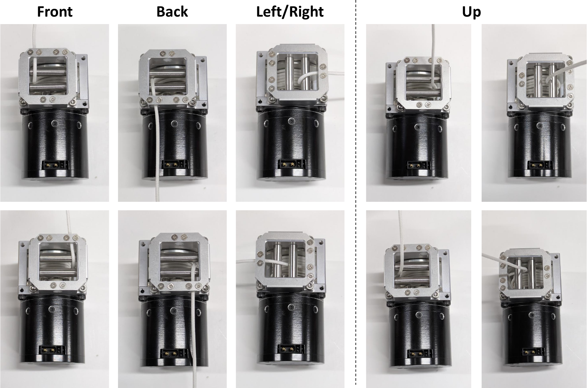
Modular Connections
Interlocking module connectors securely join QDD-MM units in parallel or in series. Parallel connections accommodate additional muscles, while series connections allow the module bodies themselves to serve as part of the skeleton. Routing and connection options can be combined to suit different muscle arrangements.
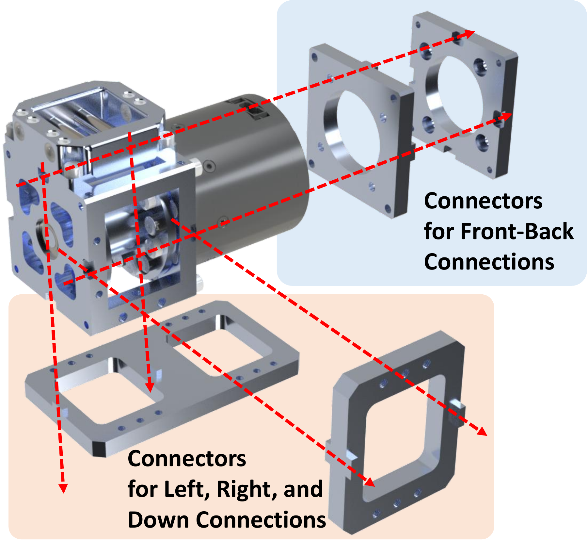
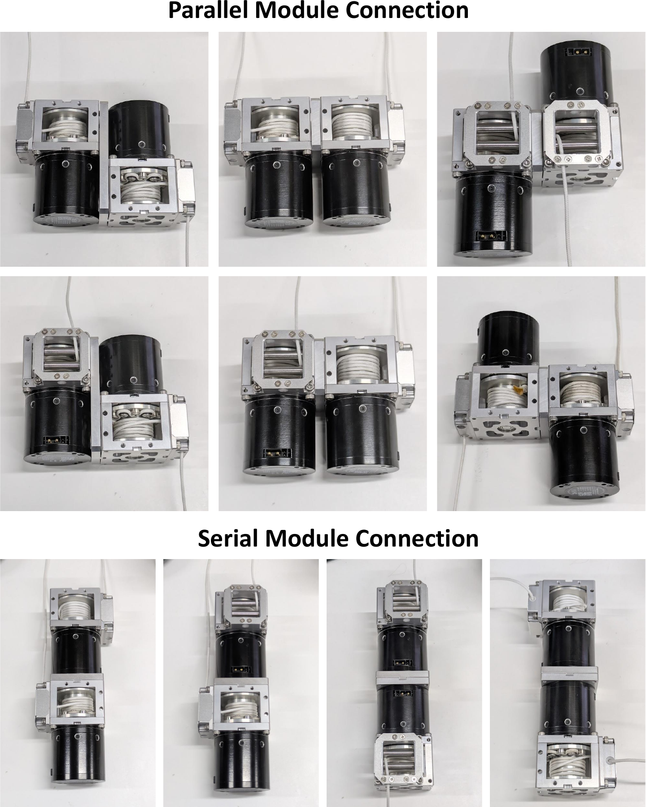
QDD-MM Assembly
This video shows the assembly of a QDD-MM muscle module, including wire attachment and the main body components (32× speed).
Assembling a QDD-MM Muscle Module (32× speed)
Connecting Muscle Modules
These videos demonstrate joining completed muscle modules using attachments.
Module Connection — Example 1 (8× speed)
Module Connection — Example 2 (8× speed)
Backdrivability and Tension Control
In a tensile test at 5 mm/s, QDD-MM showed approximately 4 N of resistive force, compared with approximately 8 N for the previous sensor-driver integrated muscle module. Cogging torque produces larger fluctuations in QDD-MM’s resistive force.
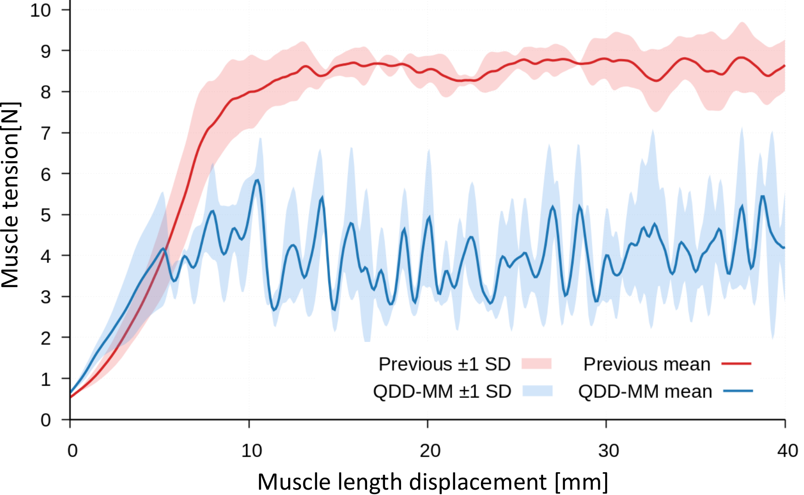
QDD-MM also exhibited substantially less tension hysteresis. When commanded tension decreased from 200 N to 70 N, measured tension was approximately 80 N for QDD-MM and 160 N for the previous module. These results support current-based tension estimation without a dedicated sensor in the demonstrated applications; residual friction and hysteresis still introduce estimation error.
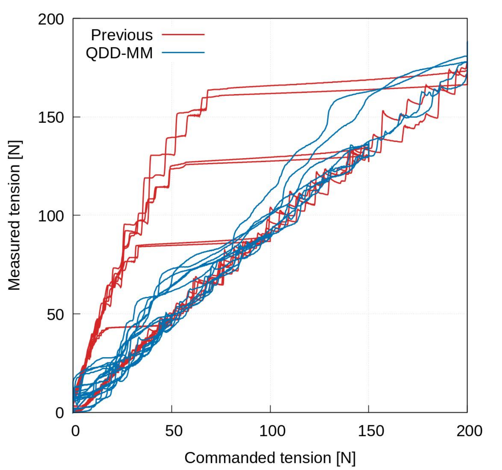
Reconfigurable Tendon-driven Robots
Three one-joint configurations demonstrate the same modules in different arrangements: two muscles on a bone frame, three muscles with an additional parallel module, and two modules connected in series to form the skeleton itself.
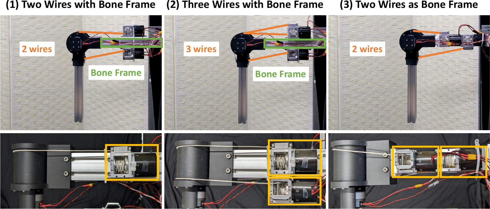
All three configurations tracked commanded joint angles with reasonably good accuracy. In the three-muscle configuration, the two agonist muscles shared the load, reducing the required tension per agonist by approximately half.
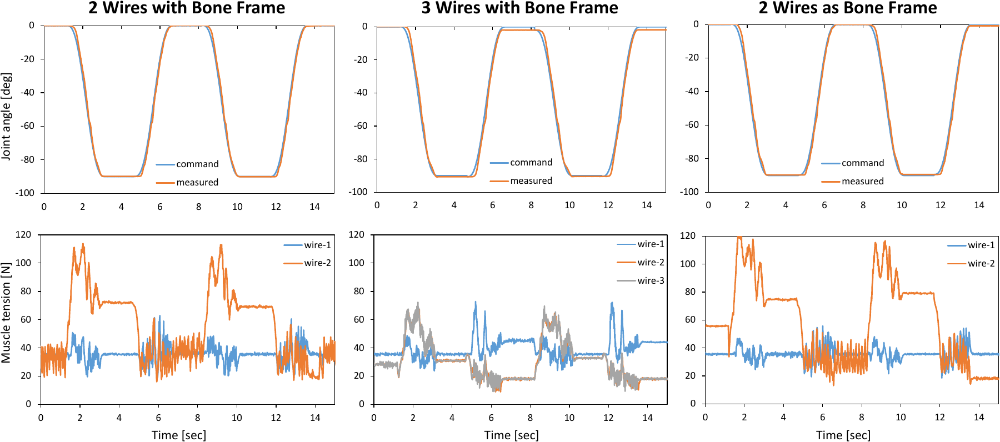
Musculoskeletal Shoulder and Arm
Eight QDD-MM units drive a 3D-printed musculoskeletal shoulder–arm prototype. Vertical and horizontal module connections provide a compact arrangement, enabling simultaneous movement of the scapula and upper arm. The motors are externally mounted in this prototype; integrating them within a full humanoid is future work.
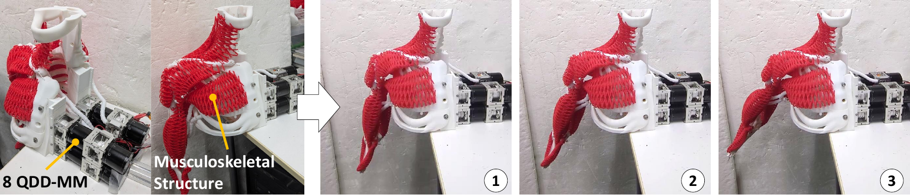
Musculoskeletal Robot Demonstration
BibTeX
@inproceedings{kawaharazuka2026qddmm,
title = {QDD-MM: A Simple and Compact Open-Source Muscle Module
with Quasi-Direct-Drive Motor for Tendon-driven Robots},
author = {Kento Kawaharazuka and Yoshimoto Ribayashi and
Takahiro Hattori and Shunnosuke Yoshimura and Kei Okada},
booktitle = {Proceedings of the IEEE-RAS International Conference on Humanoid Robots},
year = {2026},
url = {https://github.com/haraduka/qddmm}
}Contact
If you have any questions, please contact Kento Kawaharazuka (kawaharazuka@jsk.imi.i.u-tokyo.ac.jp).